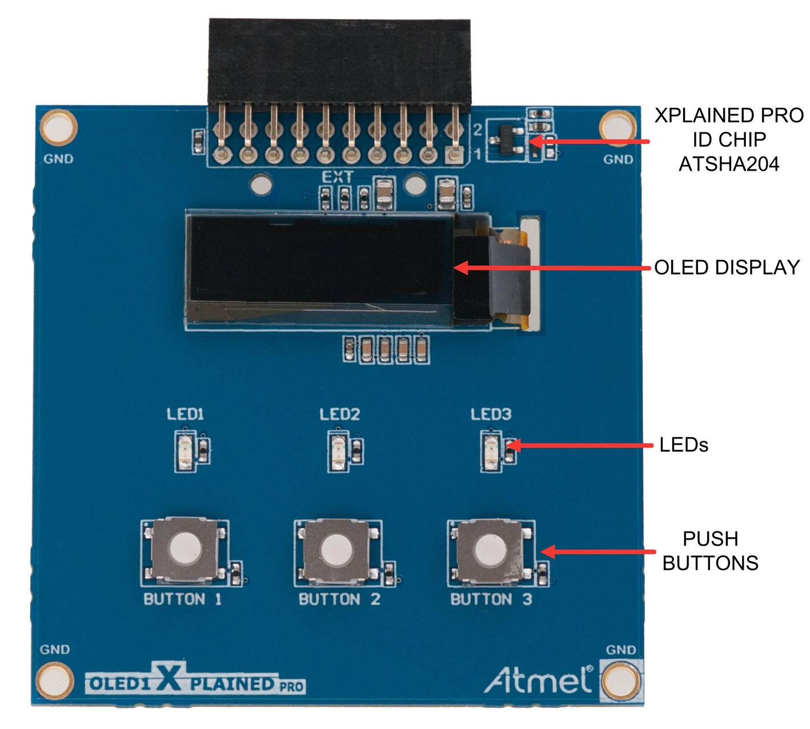

AV1¶
Nesta avaliação iremos trabalhar com o módulo OLED1 (botões/ LEDs e Display), o mesmo já está disponível no repositório da avaliação.
- Atualize o arquivo
ALUNO.jsoncom seu nome e e-mail e faça um commit imediatamente.
Faça o seu trabalho de maneira ética! Você não deve consultar seus colegas Consulta liberada ao material da disciplina
- A cada 30 minutos você deverá fazer um commit no seu código!
- Códigos que não tiverem commit a cada 30min ou que mudarem drasticamente entre os commits serão descartados (conceito I).
- Você deve inserir mensagens condizentes nos commits!
- Duração: 3h
 Ao finalizar a entrega preencher o formulário (uma única vez!):
Ao finalizar a entrega preencher o formulário (uma única vez!):
- INSERIR LINK
Descrição¶

Nessa avaliação vocês devem desenoliver um protótipo do jogo Genius, usando os três botões/Leds da placa OLED1.

O jogo deve ter o seguinte comportamento:
- Acender os LEDs em uma sequência pré definida
- Esperar que o jogador faça a mesma sequência nos botões e indicar quando:
- houver uma sequência certa: Todos os LEDs acesos por um tempo e então começa uma nova sequência
- houver uma sequência errada: Todos os LEDs piscam até o jogador apertar algum botão.
- O jogo deve possuir um nível de dificuldade com cinco estados.
Vocês devem seguir a estrutura de código a seguir:
- Interrupção nos botões
- Timeout: Usar RTT para implementar um TimeOut de 3 segundos na parte em que o jogador tem que fazer a sequência, se o jogador não apertar nenhum botão nesse tempo, o jogo trata como erro.
A sequência deve ser definida por um vetor, onde cada termo do vetor representa qual LED será acionado:
// leds
enum LED {LED1 = 1, LED2, LED3} LEDS;
// sequência: LED1, LED2, LED2, LED3, LED1, LED3
int seq0[] = {LED1, LED2, LED2, LED3, LED1, LED2};
int seq0_len = sizeof(seq0)/sizeof(seq0[0])-1;
Vocês devem desenvolver e usar as seguintes funções no código de vocês:
/**
* Função para tocar a sequência
* seq[] : Vetor contendo a sequencia (exe: seq0)
* seq_len: Tamanho da sequência (exe: seq0_len)
* delay : Tempo em ms entre um led e outro
*
* Return 0 em caso de sucesso e 1 em caso de erro
*/
int genius_play(int seq[], int seq_len, int delay);
/**
* Função que aguardar pelos inputs do usuário
* e verifica se sequencia está correta ou houve
* um erro.
*
* A função deve retornar:
* 0: se a sequência foi correta
* 1: se teve algum erro na sequência (retornar imediatamente)
*/
int user_play(int seq[], int seq_len);
/**
* Função que exibe nos LEDs que o jogador acertou
* Deve manter todos os LEDs acesos por um tempo
* e então apagar
*/
void player_sucess(void){
}
/**
* Função que exibe nos LEDs que o jogador errou
* Deve piscar os LEDs até o usuário apertar um botão
*/
void player_error(void){
}
Em caso de:
-
sucesso, os LEDs devem ficar todos acesos por um tempo e então apagar e começar o jogo com a nova sequência.
-
erro, os LEDs devem ficar piscando até o usuário apertar um botão, e então começar novamente o jogo.
Rubricas¶
Vocês devem gravar um vídeo do firmware funcionando na placa para submeter o projeto.
C¶
- Jogo possui um nível de dificuldade (uma única sequência)
- Jogo exibe a sequência nos LEDs
- Jogo aguardar por usuário e verifica sequência
- Desenvolveu e usou as funções:
genius_playeuser_play - Timeout de 3 segundos na função
user_play(entre um botão e outro o jogador não pode levar mais de 3 segundos). - Em caso de acerto: Mantém os LEDs acesos e depois apaga e começa uma nova sequência
- Em caso de erro: Pisca todos os LEDs até o usuário apertar algum botão
- Botões funcionando com interrupção
Extras (cada item + meio conceito):¶
- Mais um nível de dificuldade
- Se usuário apertar qualquer botão durante a vez do genius (
genius_play()), interrompe e exibe que o jogador errou - LEDs piscam com TC
- LED acende quando jogador aperta o botão
- N sequência, sendo N configurável por código
- Exibe no OLED a quantidade de acertos e erros
- A cada jogo, gera uma sequência nova
- dica: use a função
rand()
- dica: use a função